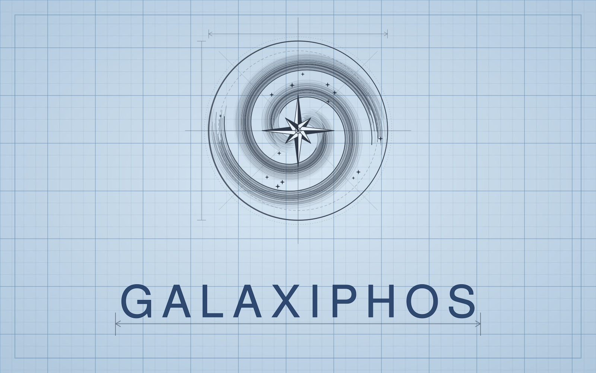
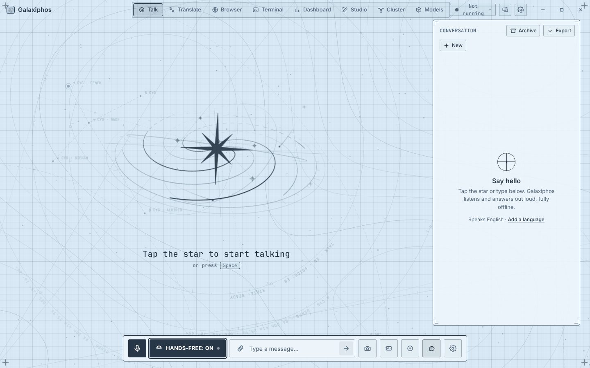
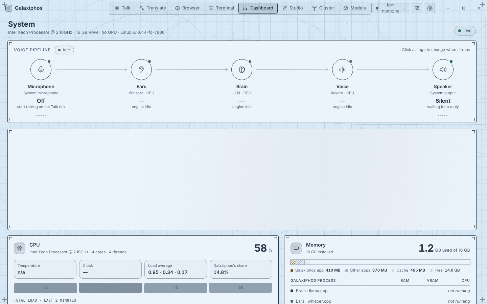
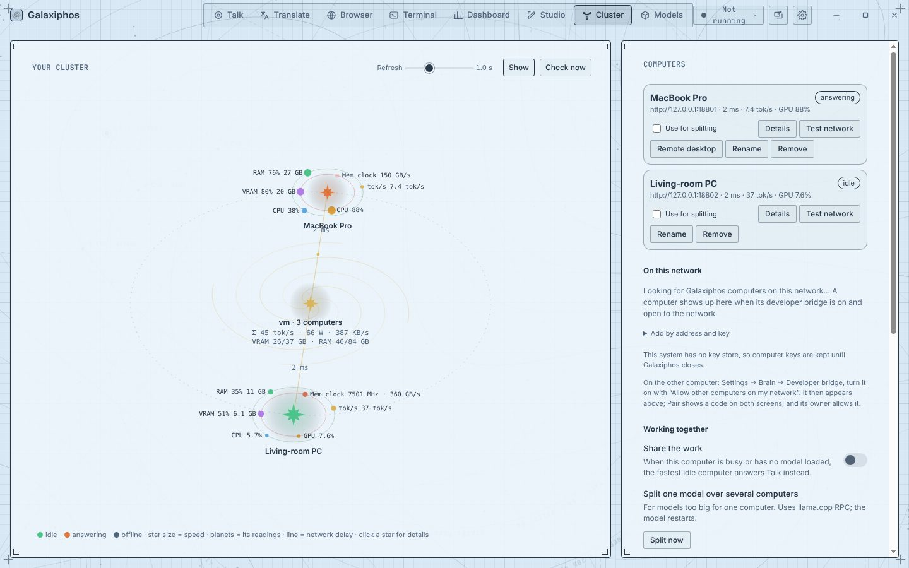
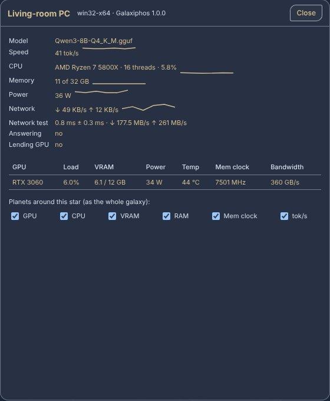
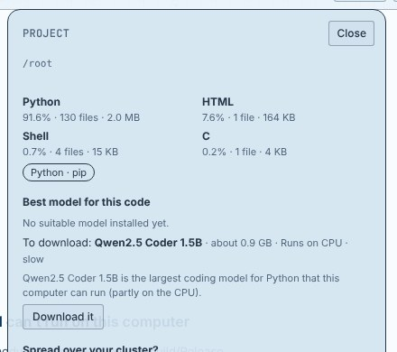

A private AI companion that runs on your own computers, and makes them work as one.
Talk to it and it talks back. It interprets live between 17 spoken languages, browses privately, works in your terminal, draws, exports anything, and joins your other computers into one cluster you can watch as a living galaxy. Local first: nothing leaves your computer unless you choose a cloud model with your own key.
- Linux · Windows · macOS (Apple silicon)
- M-series iPad app
- AMD · NVIDIA · Intel Arc · Apple GPUs
- 500 themes · 4 brand styles
- 17 voices · ~99 languages understood
- Local, hybrid or cloud AI
Proprietary · © 2026 Łukasz Barwiński – Galaxyphos Limited
Four brand styles
One galaxy, drawn four ways. Pick one here and this page changes; pick one in the apps (Settings → Appearance → Brand style) and the app icon, the title-bar mark and a matching theme change with it. Pencil Blueprint is the default.
The art is vector, drawn from one geometry, and every icon size comes from it: Windows, macOS, Linux, the iPad app icon with three alternates, and the favicons. The 500 themes and 18 hand-made skins are still there, under the brand style.
What it does
Nine views in one window, every one of them able to pop out to its own monitor.


A voice conversation
Click the star and speak: Galaxiphos hears when you stop and starts answering in under a second. Hands-free, interrupt by voice, or type.
- Attach files: text and code, Word, Excel, PDF text, ZIP, SQLite, web pages, images (for models that see) and audio.
- Camera: snap a picture into the next message, or snap and ask.
- GPU strip: load, VRAM, temperature, power and tokens per second under the star.
Every conversation kept
New Chat files the old one in the Archive: full-text search, tags, rename, continue where you left off.
- Export any conversation or Terminal session, whole or a range, to PDF, Word, Markdown, HTML, text, Excel, CSV, JSON, SQLite or a SQL dump for PostgreSQL and MySQL.
A live interpreter
Two people, two languages: each just talks, Galaxiphos recognises the language and says the translation out loud. Or translate everything it hears into one language.
Private browsing
Brave Search, ad and tracker blocking, HTTPS upgrade. Ask Galaxiphos to read a page aloud, summarise, translate or answer questions about it.
It works in your shell
A real terminal with Galaxiphos beside it: tell it what you want, it finds the exact command and runs it where you watch. Confirm, auto-run standard or full autonomous; disk-wiping commands always ask, and it never types a password.
- Web pages, if you allow: each new site asks first; only public https pages.
- Project panel: the folder's languages and stack, the best model for that code, and whether your cluster would speed it up.
Graphics Studio
Vector draws a clean SVG with your language model, offline with the local one; Picture paints with OpenAI's image model or Stable Diffusion on your network. A gallery keeps everything; save as SVG or PNG.
See everything working
The voice pipeline animated stage by stage, per-GPU load, VRAM by engine, temperatures, power, fans, clocks, a per-thread CPU heat grid, drives and AI timings.
Upgrade the brain
Models from Google, Qwen, Meta, Mistral, Microsoft, DeepSeek, NVIDIA and IBM. Fit badges for your GPUs, ten downloads at once, each resumable and checked with SHA-256, with a disk-space check that counts the others.
Your computers as one
Pair your other Galaxiphos computers and watch them as a galaxy; share the work, split a model too big for one, and see the speedup before you send anything. More below.
Pop out, lay out
Dashboard, Models, Translate and more open in their own windows on any monitor. Save the arrangement as a named layout and put it back with one click, also after a monitor was unplugged.
Your editor's AI
An OpenAI-compatible API on your computer for VS Code (Continue, Cline), JetBrains, Zed, Cursor and your own programs. Off by default, key-protected, refuses web pages. Models galaxiphos and galaxiphos-advisor (a reviewer that names bugs first).
A native M-series iPad app
SwiftUI, the same star and skins, offline models in asset packs, and the four brand styles as alternate app icons.
The super-cluster
Every Galaxiphos can lend a hand to the others. The Cluster tab shows them as a galaxy: this computer is the core with the whole cluster's totals; every other computer is a star whose readings orbit it as planets.


Find and pair
Computers announce themselves on the local network with mDNS (_galaxiphos._tcp.local) only while their developer bridge is open to it. Pair shows the same six-digit code on both screens; the owner of the other computer compares it and presses Allow. Only then is its key sent, sealed.
Share the work
When this computer is busy or has no model loaded, the fastest idle computer answers Talk instead; if it fails before answering, this one takes over. The bridge never forwards, so requests cannot loop.
Split one model
For models too big for any one computer: other computers lend their GPU with llama.cpp RPC and the model's layers spread over them, fastest memory first.
Telemetry, 0.5–2 s
GPU, CPU, VRAM, RAM, memory clock and bandwidth, tokens per second, power and network rates, with history. Refresh from 0.5 to 2 seconds; show or hide each planet and the labels for the whole galaxy or per star.
Is it worth it? Before you send
The network test measures delay, jitter and MB/s each way and is saved per computer. The estimator then gives +N% faster and minutes saved, counting upload, download, delays and packing, and warns and keeps it local when spreading out would be slower.
Remote desktop
View another computer's screen, choose its display, and, when its owner allows control as a separate, stronger yes, use its mouse, keyboard and clipboard. A red banner on the shared computer says who is watching, with Stop.

Models from anywhere, with your own keys
Local only is the default: nothing leaves your computer. Hybrid uses the cloud only when the local model can't (not loaded, a picture needs a model that sees, the conversation is too long). Cloud uses your pool in order, so a rate limit or an outage moves on to the next.
| Where | Providers | Keys |
|---|---|---|
| On this computer | llama.cpp (any GGUF), Whisper, Kokoro and Piper voices | none |
| On your network | Another Galaxiphos (the cluster), Ollama, LM Studio, llama.cpp server, Stable Diffusion WebUI | bridge key, sealed in the vault |
| Cloud | Anthropic, OpenAI, Google Gemini, Mistral, xAI, DeepSeek, Groq, OpenRouter, Together AI | yours, encrypted with the system key store |
Security and privacy
Every way in is off until you turn it on, and every sensitive step asks the person at the computer.
Credentials vault
API keys, bridge keys and computer keys are encrypted with the operating system's key store (macOS Keychain, Windows DPAPI, Linux Secret Service) and never shown again. Where a system has no key store, keys live only until Galaxiphos closes, and the app says so.
Pairing
X25519 key exchange, a six-digit code both owners compare (a man in the middle cannot make them match), and the key sealed with HKDF-SHA256 and AES-256-GCM. Web pages cannot pair.
Developer bridge
127.0.0.1 only unless you allow your network; a bearer key on every request; requests from browser pages refused; 8 MB request limit; one answer at a time per client.
Remote desktop
Off by default. Viewing and control are separate permissions, each asked on the shared computer, for 30 minutes or until Stop. Wayland desktops cannot be controlled (the system forbids it), and the app says how to switch.
Terminal
Three control modes, disk-wiping commands always confirmed, passwords never typed, the Browser walled off from the shell, web reading per site.
GPU lending
llama.cpp RPC has no password of its own, so lending is off by default, says so, and is only for a network you trust.
How it is built
An Electron app: the main process runs the engines and everything that touches the system; the window draws. Every channel between them is allow-listed and checked against the calling window.
Status
The master specification's phases 0 to 7, and what still needs real hardware or accounts.
| Phase | What | State |
|---|---|---|
| 0 | Rebrand to Galaxiphos, legal notices | done |
| 1–2 | Icons from the owner's art, 500 themes, 6-DOF paper galaxy, Hands-Free contrast | done |
| 3 | Archive, attachments, ten export formats, GPU strip, ten parallel downloads, pop-out panes and layouts | done |
| 4 | AI hub with ten vendors and the vault, camera, Graphics Studio, Terminal web access | done |
| 5 | Developer bridge, advisor model, language detection and coding model recommender | done |
| 6 | Cluster: pairing, discovery, telemetry galaxy, balance, split, lending, network test, speedup in % and minutes, remote desktop with control and clipboard | done; needs two real computers to try end to end |
| 7 | Screenshots and the master PDF | done |
| · | Brand styles: four styles, Pencil Blueprint default, switch in the apps and here | done |
Not included: Sign in with Apple and Google (needs the owner's developer accounts and registered app IDs); WAN relays such as WebRTC and Tailscale are used as plain addresses (Tailscale works as is). Remote control on macOS needs the Accessibility permission; on Linux it needs X11 and xdotool.